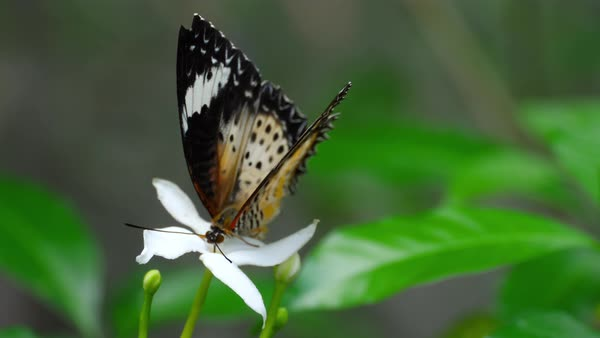

Leopard Lacewing
Cethosia cyane

Kingdom:Animalia
Phylum:Arthropoda
Class:Insecta
Order:Lepidoptera
Family:Nymphalidae
Genus:Cethosia
Species:Cethosia cyane
Cethosia Cyane, the leopard lacewing, is a species of heliconiine butterfly found from India to southern China, and Indochina. Its range has expanded in the last few decades, and its arrival in the southern part of the Malay Peninsula, including Singapore.
Most species of butterflies have a male and a female that look alike, but the Leopard Lacewing, on the other hand, do not. When the male and the female butterflies of the same species do not look alike, this is called sexual dimorphism. Sexual dimorphism occurs in several species of butterflies. One reason that the male butterflies are brighter is because they are constantly flying around to find mates so they need to be able to attract the attention of the female butterflies tend to move very little until they are mated.
This migrant species was recently discovered in Singapore in 2005. Since then, it has established a firm foothold and can be considered a common species in Singapore. Across the island, Leopard Lacewing can be found flying in many wastelands where its host plant, Passiflora foetida, grows in relative abundance. The adults have the habit of visiting flowers for nectar and are very fast on the wings.
The caterpillars of the Leopard Lacewing feed on the leaves, young shoots and outer surface of older stems of the host plant. The Leopard Lacewing caterpillars are gregarious throughout all five instars, often eating (leaves and stems), resting and moulting together in groups.
A mother Leopard Lacewing lays eggs on its host plant in a large and loose cluster on the surface (usually the underside) of a leaf, or on a young stem and even on a tendril. Each yellowish egg is barrel-shaped with a ribbed surface. It has a height of about 1.3-1.4mm, and a cross-sectional diameter of about 0.8-0.9mm.
As the 1st instar caterpillar feeds and grows, its body segments take on alternating yellow and white coloration. It grows to a length of 5.5-6mm in the 1st instar, and the moult to the 2nd instar takes place after about 2-3 days in this instar.
The 2nd instar caterpillar is wine-red in most segments, creamy yellow in 2nd, 4th, 6th and 8th abdominal segments, mostly yellow but with a touch of wine-red in all 3 thoracic segments. The rows of tubercles in the 1st instar are replaced by 6 longitudinal rows of fine-pointed black spines, 3 to each side of the body. Among these, the dorso-lateral rows of spines are the longest. A pair of short and black coronal spine appears on the head. This instar lasts 2-2.5 days with the body length reaching about 9mm before the next moult.
In the 3rd instar, there is no drastic change in physical appearance except for proportionately longer coronal spines (now about the same length as the height of the head capsule). A pink reddish dorsal patch can be seen in the 2nd thoracic segment, 1st, 3rd, 5th, 7th and 9th abdominal segments. This instar takes 2-3 days to complete with body length reaching up to 14mm.
The coronal spines in the 4th instar caterpillar are again longer proportionately with the length of each spine about equal to the 1.5x height of the head capsule. The pinky red dorsal patch on the 2nd thoracic segment seen in the earlier instar is no longer present, with only an outline still visible. The 4th instar lasts about 3-4 days with body length reaching about 22mm.
The next moult brings the caterpillar to its 5th and final instar. The caterpillar is little changed in appearance coming into this instar. One visible change is that the coronal spines are now about 2x the height of the head capsule. This phase lasts for 4-5 days and the body length reaching up to 39mm.
Pupation takes place a day later. The pupa hangs vertically. It has two pairs of pointed white processes at the middle of its body and a number of less prominent dorso-lateral processes. A pair of black foliaceous processes adorn the head. Body color is either dark brown or yellowish brown, both mottled with white and black patches. There are several dorsal spots of bright silverish. When disturbed, the body could jerk sideways through the movement of the posterior abdominal segments. Length of pupae: 26-28mm.
After about 6 days of development, the mature pupa are darkened, especially in the wing spad. The next day, the adult butterfly emerges from the pupal case.